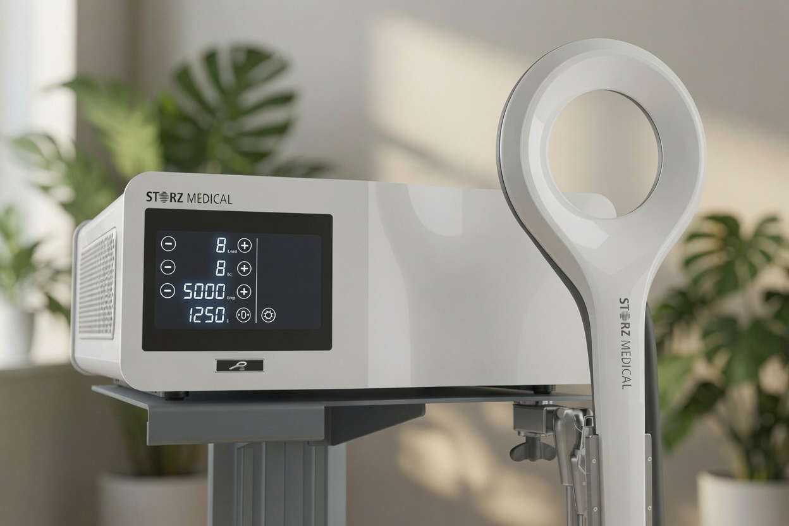
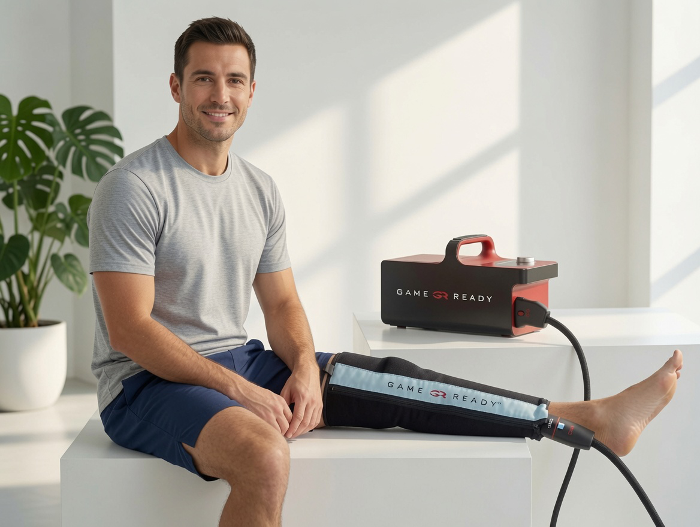
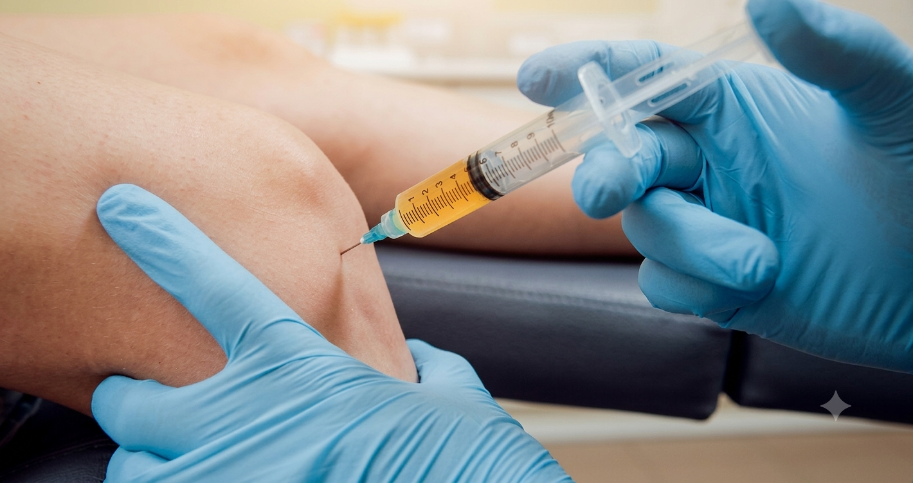
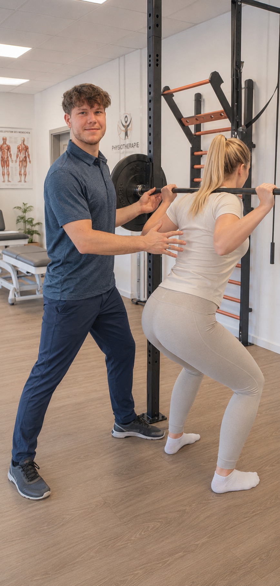
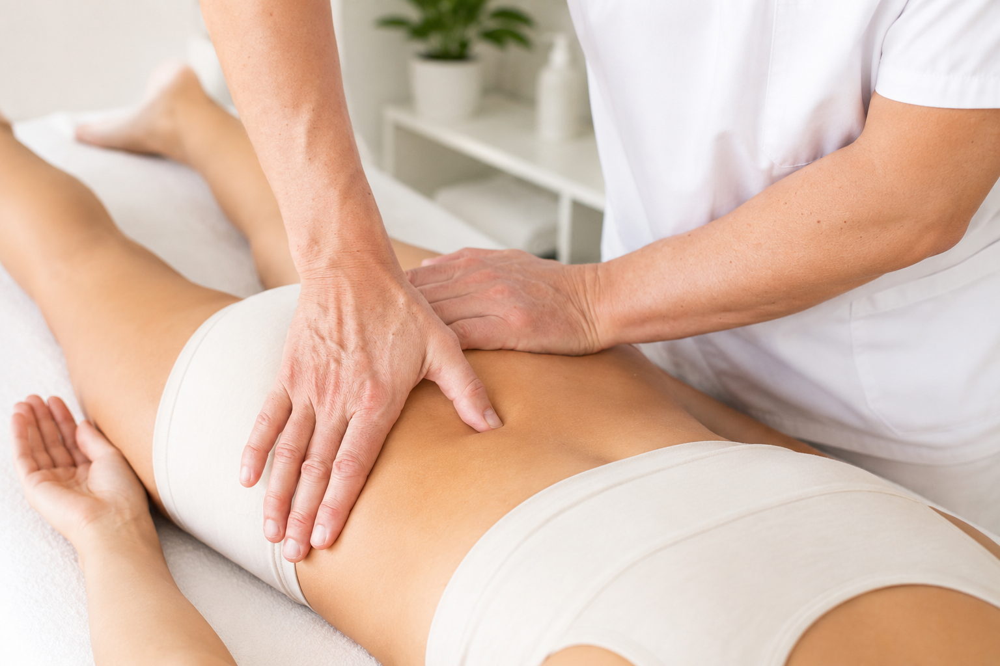

Unsere Konservative Therapie
Modernste, wissenschaftlich fundierte Behandlungsmethoden – individuell abgestimmt auf Ihre Bedürfnisse. Von konservativer Therapie bis zur minimalinvasiven Operation.
Vielseitig. Präzise. Wirksam.
Viele Beschwerdebilder können mit adäquaten konservativen Mitteln sehr gut behandelt werden – so können häufig Operationen verhindert werden. Zusätzlich sind diese Therapieoptionen unterstützend nach operativen Eingriffen zur rascheren Genesung anwendbar.
Stoßwellentherapie (ESWT)

Hochenergetische Druckwellen werden gezielt auf das erkrankte Gewebe gerichtet – ohne Operation, ohne Narkose. ESWT aktiviert körpereigene Heilungsprozesse bei Fersensporn, Kalkschulter, Tennisellbogen, Achillessehne und weiteren Beschwerden am Bewegungsapparat.
Magnetolith-Therapie (EMTT)

Hochfrequente Magnetimpulse (bis 300 kHz, 80 mT) erreichen Gewebe bis 18 cm Tiefe – vollständig ohne Injektion oder Operation. EMTT aktiviert körpereigene Heilungsprozesse bei Sehnenerkrankungen, Arthrose, Rückenschmerzen und Sportverletzungen.
GameReady Kältekompressionstherapie

GameReady kombiniert gezielte Kühlung mit kontrollierter Kompression – in einem System. Nachgewiesene Wirksamkeit zur Schwellungs- und Schmerzreduktion nach Operationen (Knie, Schulter, Sprunggelenk) und Sportverletzungen.
ACP-Eigenbluttherapie

Beim Autologen Conditionierten Plasma (ACP) wird körpereigenes Blut des Patienten entnommen, aufbereitet und konzentriert. Das gewonnene Plasma enthält eine hohe Konzentration an Wachstumsfaktoren, die ins verletzte Gewebe injiziert werden und die natürliche Regeneration beschleunigen.
Hyaluronsäure-Infiltrationen
Hyaluronsäure ist ein natürlicher Bestandteil der Gelenkflüssigkeit und wirkt als Schmiermittel und Stoßdämpfer. Bei Arthrose nimmt die körpereigene Hyaluronsäure-Produktion ab. Durch Injektionen ins Gelenk wird die Viskosität der Gelenkflüssigkeit verbessert und Schmerzen werden reduziert.
Vitamin-C Infusion
Nach einer Operation befindet sich Ihr Körper in einem erhöhten Bedarf an Vitaminen. Studien zeigen, dass eine gezielte intravenöse Zufuhr von hochdosiertem Vitamin C die Kollagensynthese fördert, Entzündungen reduziert und die Geweberegeneration messbar beschleunigt.
Sportwissenschaftliche Trainingsplanung
Eine besondere und höchst moderne Erweiterung der Nachbehandlung nach Verletzungen stellt die Sportwissenschaft dar. Was zumeist hauptsächlich Profisportlern in großen Vereinen zugänglich ist, erhalten unsere PatientInnen im Anschluss an die physikalische Therapie: einen individuellen, wissenschaftlich fundierten Trainingsplan.
Physikalische Therapie

Die physikalische Therapie umfasst ein breites Spektrum an Maßnahmen: Krankengymnastik, Elektrotherapie, Wärme- und Kälteanwendungen sowie manuelle Therapietechniken. Ziel ist die Wiederherstellung der vollen Beweglichkeit und Kraft nach Verletzungen oder Operationen.
Lymphdrainage – Heilmassage

Die manuelle Lymphdrainage ist eine sanfte Massagetechnik, die den Abtransport von Gewäbsflüssigkeit (Lymphe) unterstützt. Sie ist besonders nach Operationen und Verletzungen wichtig, um Schwellungen zu reduzieren und die Heilung zu fördern.
Welche Therapie ist die richtige für Sie?
In einem persönlichen Gespräch analysieren wir Ihre Beschwerden und erstellen einen maßgeschneiderten Behandlungsplan.
Termin Buchen →